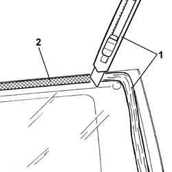

7035C16 fixed rear side window one lh or rh clean edges and sand small abrasions
- Path
- Procedures > 70 FITTINGS > 7035 BODYSHELL WINDOWS > 7035C passenger compartment side fixed windows > 7035C16 fixed rear side window one lh or rh clean edges and sand small abrasions
- Kind
- repair procedure (removal / refitting; the operation number is the code)
- Applies to
- all engines; all production periods
- Interactive page
- https://sloeber94.github.io/elrnDB-fPnd/en/#/2753175
Applies to: all engines; all production periods
1. Using a suitable tool, cut and level the bead of sealant on the fixed side window so as to reduce its thickness to a minimum without removing it completely.
2. Carefully clean with compressed air the printed area around the edge of the fixed side window and thoroughly degrease with heptane.

Applies to: all engines; all production periods
Check that the side fixed window is not damaged.
If glueing takes place 60 minutes after cutting and smoothing the bead of sealant, treat the sealant surface with the specific activator and wait 15 minutes before fixing the windscreen.
 | Type | Component | Name | Qty. |
|---|---|---|---|---|
- | Sealant | FIXED SIDE WINDOW | PRIMER | - |